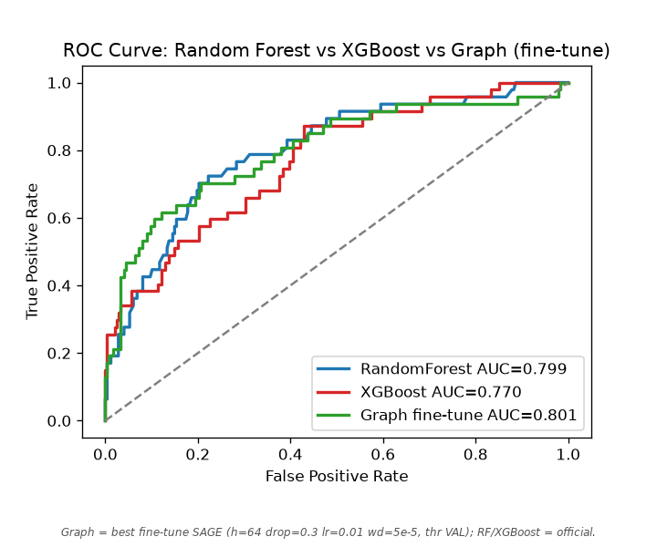
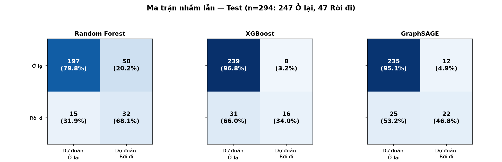

Chào buổi sáng.
Ba việc cần làm hôm nay
Việc nào ghi Cần làm ngay thì nên xong trong hôm nay hoặc ngày mai.
Nhóm nào cần chú ý nhiều nhất
Thanh càng dài nghĩa là nhóm đó có nhiều người muốn nghỉ hơn. Màu đỏ là mức cao, màu cam là mức cần theo dõi, màu xanh là mức ổn định.
Danh sách cần giữ chân ngay
Những người nên gặp trong tuần này. Mỗi dòng đã ghi sẵn lý do và việc nên làm. Mức Cao nghĩa là nên gặp ngay trong 1 đến 2 ngày tới.
Xem nguy cơ của một nhân viên
Chọn một ví dụ có sẵn hoặc điền thông tin để xem mức cần giữ chân và việc nên làm. Kết quả chỉ là gợi ý, anh chị quyết định sau khi trò chuyện thực tế.
Điền thông tin bên trái rồi bấm “Xem nguy cơ của người này” để xem mức cần giữ chân và việc nên làm.
Nguyên nhân nghỉ việc
Ba câu trả lời ngắn gọn: nhóm nào nghỉ nhiều, điều gì ảnh hưởng nhiều nhất, và một trường hợp cụ thể trông như thế nào.
Điều gì ảnh hưởng nhiều nhất
Thanh càng dài nghĩa là điều đó càng liên quan đến việc nghỉ. Con số bên cạnh chỉ để so sánh, thanh dài hơn là quan trọng hơn.
Từng nhóm có điểm gì chung
Mỗi dòng là một nhóm nhỏ trong công ty. Cột cuối ghi 3 điểm chung dễ thấy nhất của nhóm đó.
Xem một trường hợp cụ thể
Màu đỏ là điểm làm tăng khả năng nghỉ, màu xanh là điểm đang giữ người ở lại. Trung bình cả công ty, cứ 100 người thì khoảng 16 người nghỉ.
Xem trước hiệu quả của một chính sách
Chọn một thay đổi mà công ty đang cân nhắc, hệ thống sẽ ước tính giữ được khoảng bao nhiêu người. Đây là con số ước tính để bàn bạc, không phải lời hứa chắc chắn.
Giới thiệu: cách đánh giá và độ tin cậy
Viết ngắn gọn cho người không làm kỹ thuật.
- Hệ thống nhìn vào hồ sơ làm việc hằng ngày như làm thêm giờ, mức hài lòng, thu nhập, thâm niên.
- Rồi đối chiếu với những người có hoàn cảnh giống nhau đã nghỉ hoặc ở lại trước đây.
- Từ đó xếp mỗi người vào một trong ba mức: Cao là nên gặp ngay, Trung bình là cần theo dõi, Thấp là đang ổn định.
Đã kiểm chứng khớp bản Python — sai số dưới 0,001
Đánh giá đáng tin cậy để dùng hằng ngày: trong 10 trường hợp, hệ thống nhận định đúng khoảng 8. Con số này rút ra từ 1.470 hồ sơ nội bộ của công ty. Dù vậy, hệ thống không biết hết chuyện riêng của mỗi người, nên anh chị vẫn trò chuyện trực tiếp trước khi quyết định.
Bằng chứng kiểm định
Biểu đồ bên dưới là kết quả kiểm định trên dữ liệu nội bộ: khả năng phân biệt người nghỉ và người ở lại, và các yếu tố ảnh hưởng mạnh nhất.


Dữ liệu trong trang này là nội bộ. Khi in hoặc gửi cho người khác, thu nhập chi tiết được che bớt. Không dùng các thông tin như tuổi, giới tính hay tình trạng hôn nhân để phân biệt đối xử, chỉ dùng để hiểu và hỗ trợ người lao động tốt hơn.
Trạng thái liên hệ và ghi chú của anh chị được lưu ngay trên máy này, không gửi đi đâu cả. Có thể xóa sạch khi cần.